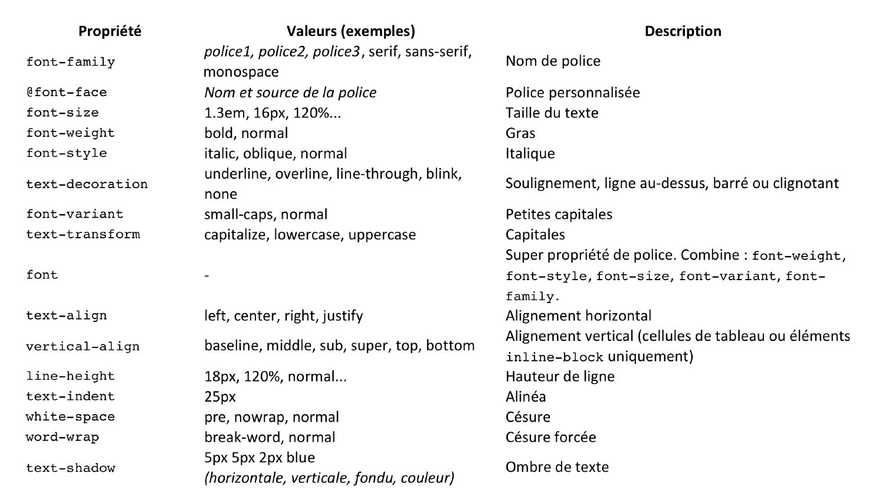
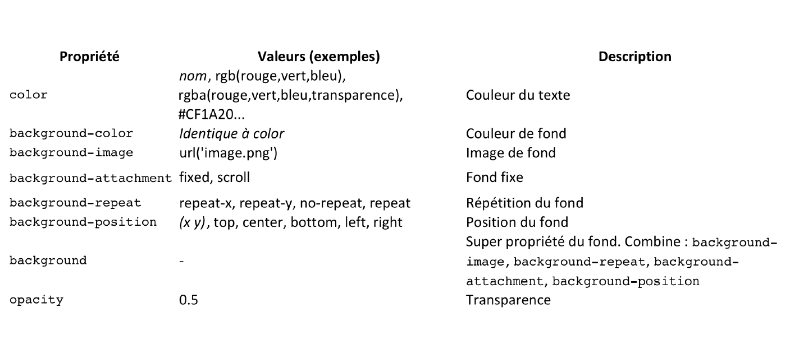
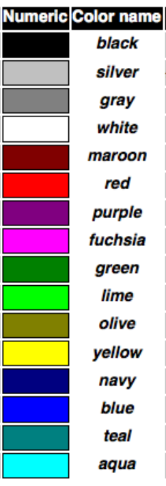
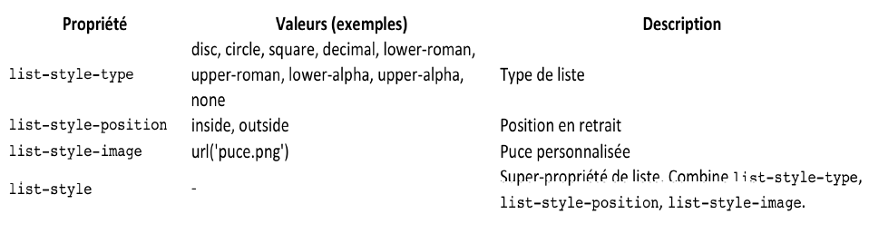
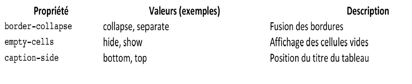

HTML
HTML : HyperText Markup Language
Structure :
- body : la racine des divisions
- nav : division pour les liens de navigation (le menu)
- section : division générique regroupant un même sujet
- article : division de contenu indépendant
- aside : division dont le contenu est un complément par rapport à ce qui l'entoure
- header : introduction du document entier (en-tête de page) ou d'une section, d'un article,…
- footer : conclusion du document entier (pied de page), ou d'une section, d'un article,…
- div : pour regrouper des éléments
- span : pour regrouper certains types d'éléments, comme des mots
Texte:
- h1 : pur titre
- p : pour paragraphe
- br : retour a la ligne
- a : lien internet
- hr : ligne horizontale
- cite : pour faire une citation
- blockquote : pour faire un bloc de citation
- li : liste (doit etre acompagnier de ul ou ol... )
- ol : liste ordonnée (avec numero)
- ul : liste a puces(comme celle-ci)
- dl : liste de definitions
- dt : le mots a definire
- dd : la definition du mot
- em : emphase
- strong : emphase fort
Tableau (table) :
- caption : legende du tableau
- tr : crée une ligne de tableau
- th : titre d'une collonne
- td : elements d'une collonne
voici un tableau
| titre 1 | titre2 |
| truc 1 | bla1 |
| truc2 | bla2 |
Contenu media (img/audio/video) :
Images :
- map : zone clickable
- area : utiliser avec map pour selectionner les emplacement clickable
- shape = "rect"(les 4 coins) et "circle" (abscisses, ordonnée,rayon)
- coords = les coordonnées
- figure : ilustration de quelque chose
- figcaption : ecrire l'ilustration
- picture: images adaptatives permet de charger differents images selon la taille de l'ecran
- scr = URL de l'image
- alt = texte alternatif, à afficher si l’ image ne peut pas l’être
- title = bulle d’aide
- width, height = dimensions
- srcset = changer l'image pour quelle convient a l'ecran
- sizes = affcihe l'image que sur la taille indiquer
Audios/Videos :
- controls = c'est pour controler la lecture audio/video
- loop = le relancement de du fichier audio
- type = le format de la video/audio
- src = l'emplacement de la video/audio
Formulaire :
Zone de saisie de texte :
- form : zone de saisie (obligatoire pour faire formulaire)
- methode= définit la méthode à employer pour transmettre au serveur l'information recueillie dans les champs du formulaire ("post"| "get")
- action= ou on mettra un programme externe (PHP) qui va traiter les information (ex:"traite.php")
- fieldset : ensemble regroupent les zones de texte
- legend : le titre du fieldset
- label : le titre des zones de texte (ex : "nom/prenom:")
- input : on definie une valeur entrant
- type="text" : la forme de la valeur entant sera un text
- type="reset" :elle permet de cree un bouton "reset"
- type="submit" :elle permet de cree un bouton "submit"
- name= attribue permetent de stocker la valeur entre dans une varable de type name ex("nm")
-
Exemple 1 : zone de texte
- datalist : permet de cree une list de mots qui a faire une Auto-complétion ou une auto-suggestion
- list=attribue a mettre avec la balise input pour selectionner la datalist faite (ex:"IdList")
- option : balise qui contiendra les options pour la datalist
- value= attribue permetent de definir les differents options de la datalist
Exemple 2: datalist
Exemple 3: autre type possible pour input ("password"|"email"|"url"|"tel")
Les choix :
- type="radio": cree des boutons permetent de faire qu'un choix
- value= : c'est la valuer qui correspond a le choix selectionner
- name="laMeme" en mettent la meme chose dans l'atribue name des balise input une seul valuer va etre pris en compte
Exemple 1 : une seul solution ("radio") :
- type="checkbox" : cases a cocher pour les choix multiplie (pas la peine de "value=")
Exemple 2 : choix multiplie ("checkbox") :
- select : cree une liste droulante permetent de choisir les options proposer
- optgroup : pour cree des categories differets dans la liste deroulante
Exemple 3 : liste deroulante (select | optgroup) :
Autres attribue/type :
- nombreux types pour input :
button, checkbox, color, date, datetime,
datetime-local, email, file, hidden, image, month,
number, password, radio, range, reset, search,
submit, tel, text, time, url, week
- nombreux attributs pour form et input :
form: autocomplete, novalidate
input : autofocus, autocomplete, checked, list, min, max,
multiple, placeholder, required, size, step,...
CSS
CSS : CascadingStyle Sheets
Les differents maniere pour appliquer un style :
- balise1, balise2 : appliquer le style sur les 2 balise
- balise1 balise2 : appliquer le style sur tous les elements de la balise2 qui se situe a l'interieur de la balise1
- balise1 >balise2 : le style est appliquer sur tous les elements des balise2 qui a pour parent une balise1
- balise1 + balise2 : le style est appliquer sur tous les elements des balise2 qui suivent immediatement des balise1
- #balise1 : le style est appliquer sur tous les elements de la balise ayant comme identifiant "balise1"
- .nomclass : le style est appliquee sur tous les elements des balise ayant comme class "nomclass"
- balise1.nomclass : le style est appliquer sur tous les elements des balise1 qui on pour class "nomclass"
- selecteur : outils en plus pour simplifier la selections de balise pour l'application de style liste des selecteur
Proprietes de mise en forme :

Polices de caracteres :
- 2 grande familles :
- Serif : Times, Times New Roman, Book Antiqua,…
- Sans serif : Arial, Verdana, Helvetica,…
- Exemples :
- Ce texte est écrit avec une police serif (times)
- Ce texte est écrit avec une police sans-serif (Verdana)
Tailles de la polices :
- px : pixels notation classique
- em : valeur qui multiplie la taille inisiale du texte (1em = 1 px = 100%)
- pourcentage % : permet de redimensionner du texte
- vw : viewport utiliser pour les tablette et smartphone
- cm/mm/pt/pc/in : uniquement reserver a l'impression papier
Proprietes de couleurs et de fond :


Proprietes listes :

Proprietes de tableau :

Proprietes sur les liens :
- a:link :Apparence du lien par défaut
- a:visited : Apparence du lien lorsque la page a déjà été visitée
- a:hover : Apparence du lien lorsqu’on pointe dessus
- a:active : Apparence du lien lors du clic de la souris
Proprietes des boites :


Proprietes de positionnement et d'affichage des boites:

7 categories de positionnement :
- flux : c'est losque aucun positionnement est selectionner
- inline-block : Les éléments de type inline-block se positionnent les uns à côté des autres
wesh
wesh
wesh
- flexbox : le modèle de boîte flexible
- flex-direction : définit la direction de l’axe principal du conteneur flex (row | row-reverse | column | column-reverse)
- flex-wrap : la façon dont les éléments-flex vont s'agencer selon la taille de la fenêtre (nowrap | wrap | wrap-reverse)
- justify-content : contrôle l'alignement de tous les éléments-flex sur l'axe principal (flex-start | flex-end | center | space-between | spacearound)
- align-items : contrôle l'alignement de tous les éléments-flex sur l'axe secondaire (stretch | flex-start | flex-end | center | baseline)
- align-content : Similaire à align-items mais au lieu d'aligner les élementsflex, aligne les lignes (normal | stretch | flex-start | flex-end | center | spacebetween space-around | baseline |)
- align-self : contrôle l'alignement d'un élément-flex particulier le long de l'axe secondaire (stretch | flex-start | flex-end | center | baseline)
- order : Pour cibler des éléments-flex en particulier et modifier leur ordre de visualisation (1|2|3..)
- flex : Contrôle la taille des éléments-flex le long de l'axe principal (‘flex-grow’ || ‘flex-shrink’ || ‘flex-basis’) ex: 0 1 auto
flex-grow : proportion de l'espace libre peut-on allouer en supplément à l'élément-flex
flex-shrink : proportion de l'espace peut être retirée à l'élément-flex
flex-basis : la taille de l'élément-flex avant tout agrandissement/réduction
- relative : positionnement relative (ex: position:relative ) il faut preciser top,bottom,left,right
- absolue : positionnement absolue (ex: position:absolue ) il faut preciser top,bottom,left,right
- fixed : positionnement fixed (ex: position:fixed ) il faut preciser top,bottom,left,right
- float : positionnement float (ex: position:float ) il faut preciser left,right et on utilise (clear:left (ou right)) pour arreter le float
Responsive Web Design :
balise meta :
meta name="viewport" content="initial-scale=1, width=device-width"
- width:adapte le "width" (largeur) de la fenêtre du
navigateur (= le viewport) à la largeur du "device" c'està-
dire la largeur du terminal exprimée en dp)
- initial-scale: fixe le niveau de zoom de la page (1 =
100%) pour s'affranchir du zoom par défaut rendant les
contenus illisibles
PHP
PHP :Hypertext Preprocessor
Syntaxe de base PHP :
- les balises d’échappement (début et fin) representant le corps du code php
- ; : instructions terminées par un point-virgule
- {} : bloc d’instructions délimité par des accolades
- // ou # : commantaire sur une ligne
- /*...*/ : commantaire sur plusieurs lignes
- Type PHP : booléen, entier, réel (flottant), chaîne de caractères
le type d’une variable est déterminé par la valeur qu’on lui donne et peut changer au cours du programme
- $NomDeVariable : variable
- Variables dynamiques : exemple:
$pomme = 'golden';
$fruit = 'pomme';
print ${$fruit}; //équivalent à print $pomme;affiche golden !
echo ${$fruit}; //équivalent à print $pomme;affiche golden !
- define : les constante n'on pas de $ et par convention elle sont en majuscule (ex:"define("TAUX",6.55957);")
Les opérateurs :
- Opérateurs arithmétiques :
+ - * / %
- Opérateurs de comparaison :
== != < <= > >= === !==
- Opérateurs booléens :
! AND && OR || XOR
- Opérateurs d'incrémentation et de décrémentation :
++ --
- Opérateurs d'affectation et de concaténation :
= . .=
Structures de contrôle :
- if/ if .. else / if .. elseif … : conditions (voir code pour Exemple)
- switch, … :plusieurs conditions (voir code pour Exemple)
- while / for / foreach… : les loop (voir code pour Exemple)
Les chaînes de caractères :
- interpretation des variables : une chaine de caracteres s'ecrit avec des "" ou '' on peux faire par exemple :
$fruit = "la pomme"; (ou $fruit = 'la pomme');
$chaine1 = "mon fruit préféré est $fruit"; //mais attention pour ça il faut utiliser des ""
- Caractère d'échappement \ : ???
- Concaténation de chaînes : on addition des valeurs de chaine de caracteres en mettent un .= entre les variable ou "=$1.$2"
- Affichage simple : pour afficher des chaine de caracteres onn utilise echo() ou print() avec ou sans () (ex: print 'Bonjour') (ex2:echo 'PHP',5,' est super')
- Affichage avec masque : pour afficher des variables avec masque
exemple:
$masque = 'la dernière version de %s est %s';
printf ($masque,'PHP', '5.4.17');
$chaine = sprintf ($masque,'PHP', '5.4.17');
- Accès à un caractère d'une chaîne : pour acceder a un caractere dans une variable il faut faire $chaine[x]
- strlen() : Taille d'une chaîne
- strpos() : Position d'un motif dans une chaîne
- str_replace() Remplacer un motif dans une chaîne
- ereg() : Comparaison d’une chaîne à un motif
- strtoupper() / strtolower() : Changement de casse
- addslashes() stripslashes() : Echappement et inverse
Les tableaux (array) :
2 categories principales de tableau :
- Tableau indexé numériquement :
$tab = array('pomme','poire','pêche');
$tab[0]= 'pomme'; $tab[1]= 'poire'; $tab[2]= 'pêche'
$tab[]= 'pomme'; $tab[]= 'poire'; $tab[]= 'pêche';
- Tableau associatif :
$tab = array (
'prenom' => 'toto',
'age' => 10,
'note' => 0
);
Traitements des tableaux :
- print_r($nomTableau) (ou var_dump()) :Afficher un tableau
- count ($nomTableau) : Taille d’un tableau
- explode / implode : Convertir une chaîne en tableau (et inversement) (ex:$nomTableau = explode(",",$chaine); ou implode pour faire l'inverse)
- foreach (ou while , for) : Parcourir un tableau
exemple 1 :
foreach ($nomTableau as $clef => $valeur)
{
echo $clef.' : '.$valeur.'
';
}
exemple 2 : parcourir tableau associatif
$tab = array (
'prenom' => 'toto',
'age' => 10,
'note' => 0);
foreach ($tab as $clef => $valeur)
{
echo $clef.' : '.$valeur.'(br) ' ;
}
Variables prédéfinies PHP :
Il existe des variables prédéfinies, toujours accessibles (en anglais : superglobals) , Ce sont des tableaux qui contiennent des informations sur le contexte de communication entre le client et le serveur
- $_GET : Contient la liste des variables transmises via la méthode GET dans un formulaire
- $_POST : Contient la liste des variables transmises via la méthode POST dans un formulaire
- $_COOKIE : Contient la liste des variables transmises par le navigateur via les cookies
- $_REQUEST : Ce tableau agrège $_POST $_GET $_COOKIE en un seul tableau
- $_FILES : Dans un formulaire, il est possible de télécharger des fichiers. Ce tableau décrits ces fichiers.
- $_SESSION : Ce tableau permet de manipuler directement les données de session utilisateur
- $_SERVER : Permet de connaître le détail de la requête en cours (nom, chemin de la page,…) et les éléments spécifiques au serveur web (nom, version) et à la connexion (IP paramètres du navigateur,…)
- $_ENV : Contient les variables de l'environnement d'exécution de l’interpréteur PHP
- $GLOBALS : Contient l'ensemble des variables globales définies.
Traitement d'un formulaire :
Principe:
$nom = $_GET['nm'];
$prenom= $_GET['pn'];
…/..
?>
Securite XSS :
htmlentities() : La fonction htmlentities() remplace tous les caractères possibles en leur équivalent HTML
Programme generique de traitement :
echo "ul";
If ( ! empty($_POST) ) {
foreach($_POST as $key => $value) {
echo "li $key: ".htmlentities($value)."/li";}
}
else {
foreach($_GET as $key => $value) {
echo "li $key: ".htmlentities($value)."/li";}
}
echo "/ul";
?>